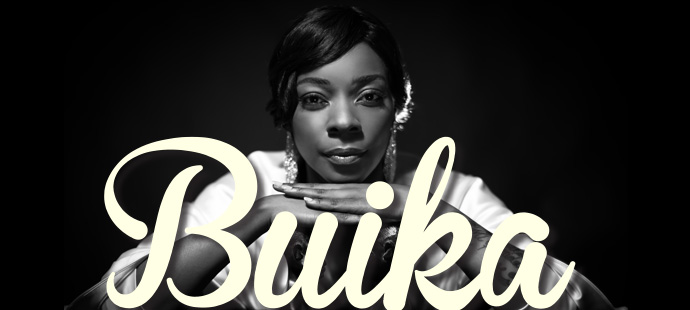
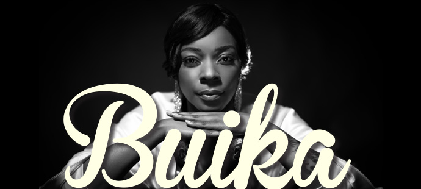
 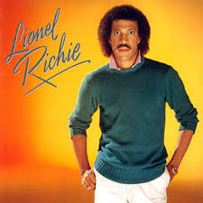
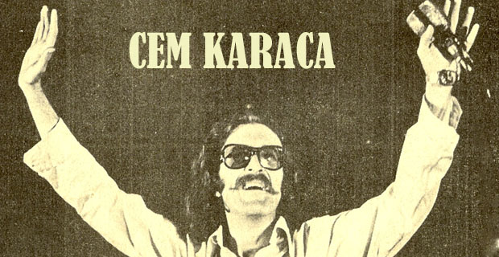
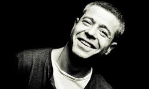
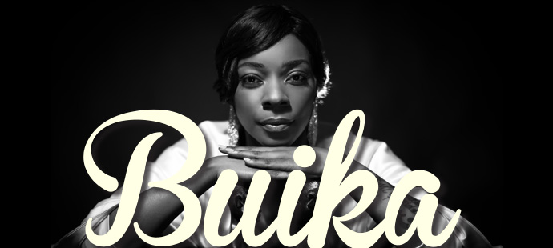
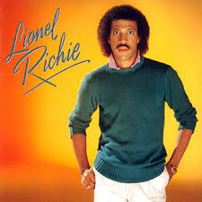
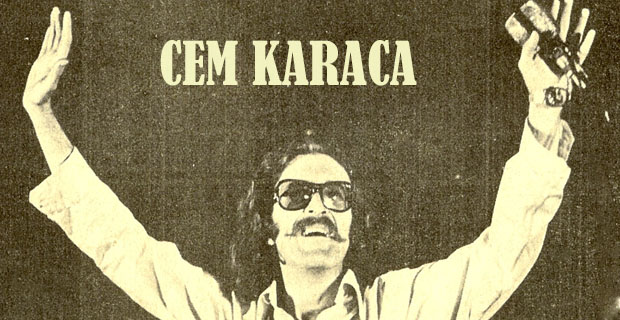
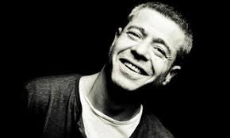
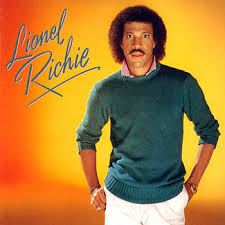
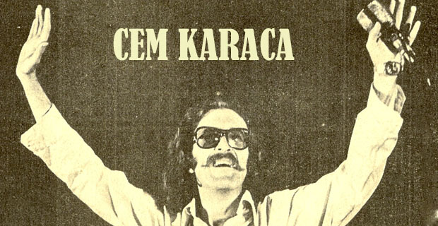
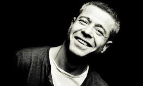
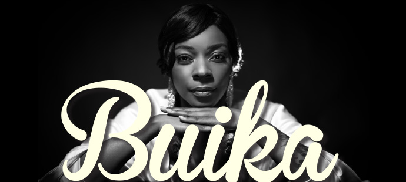
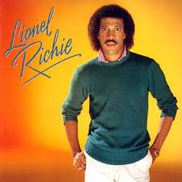
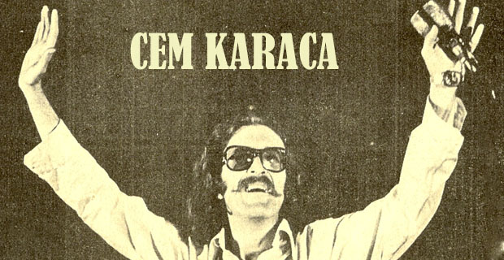
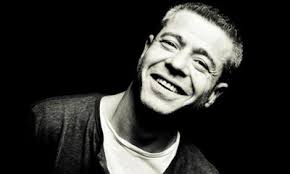Nobody can deny the importance of leisure in life. Rest is as important as work,school... One must have some useful hobby to pursue in one's leisure hours. Leisure can, in that case, become a source of real pleasure.I have a lot of hobbies, but two of them take up a lot of space in my life.Firstly,listen to music.I don't have much of a care for music tpyes as pop,rock,blues..Actually depending on my mood.I listen to many singers without making foreign or Turkish distinctions;Sezen Aksu,Levent Yuksel,,Madeleine Peyroux, Lionel Richie,Cem Karaca,MFO,Sebnem Ferah,Bon Jovi,Buika,Quuen,The Beatles,George Michael,Sila,Stevie Wonder,Sertab Erener,Duman,Teoman.....and many more artists I cannot remember in now.|The other hobby is take a photo.I like taking pictures of people,nature...For this reason I read photography course as an elective course last semester.